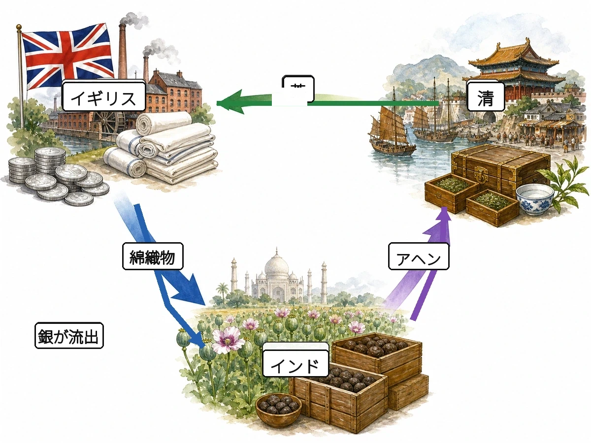

歴史 ⑨ 問題集 Web版
市民革命と近代化
市民革命 〜 帝国主義の時代
 いっしょに がんばろう！
いっしょに がんばろう！タブか下のリストから単元を選ぼう！
やり方（おすすめ順・穴埋め・一問一答・4択・記述）は単元を開いてから選べるよ。
やり方（おすすめ順・穴埋め・一問一答・4択・記述）は単元を開いてから選べるよ。
年
年表でチェック
（ ）をタップすると答えが出るよ。まずは自分で言ってから確かめよう！
| 年代 | できごと |
|---|---|
| 1649年 | ピューリタン革命で国王が処刑される |
| 1688年 | 血を流さず国王を追放するが起こる |
| 1689年 | 議会の権利を定めたが制定される |
| 18世紀後半 | イギリスでが始まる |
| 1775年 | アメリカでが始まる |
| 1776年 | が発表される |
| 1787年 | が制定される |
| 1789年 | バスティーユ牢獄襲撃をきっかけにが始まり、が発表される |
| 1793年 | 国王が処刑される |
| 1804年 | が皇帝に即位する |
| 1814年 | が開かれる |
| 1840年 | イギリスと清の間でが起こる |
| 1842年 | 清がイギリスとを結ぶ |
| 1857年 | インドでが起こる |
| 1861年 | ロシアでが出され、同じ年にアメリカでが始まる |
| 1871年 | ドイツで統一が達成されが成立する |
1
イギリスの革命
▶やり方をえらぼう目次にもどれば何度でも変えられるよ
解答：
採点：
順番：
順番：
A要点まとめ（ ）をタップして確かめよう
📖 先に参考書で理解する
17〜18世紀のヨーロッパでは、人間の理性で政治や社会をより良くできるというが広まった。イギリスのは、国家は人々の合意で成り立つという社会契約説を唱え、政府が権利を守らなければ従わなくてよいとするを主張した。フランスのは三権分立を、は国民主権を唱えた。17世紀、クロムウェル率いる議会派が国王軍を破るが起こり、1649年に国王チャールズ1世が処刑され一時的に共和制となった。1688年には議会を無視する国王を血を流さず追放するが起こり、翌1689年に議会の同意なしに税や法律を決められないと定めたが制定され、国王の権力が制限されるが確立した。
B一問一答1 / 14
人間の理性で政治や社会をより良くできるという考え方は？
📖 解説を読む（ヒント）
啓蒙思想
17〜18世紀のヨーロッパで広まった思想で、ロックやモンテスキューらが代表的人物。市民革命に大きな影響を与えた。
B一問一答2 / 14
抵抗権を主張したイギリスの思想家は？
📖 解説を読む（ヒント）
ロック
17世紀イギリスの思想家。政府が国民の権利を守らなければ国民は抵抗してよいと唱え、独立宣言に影響を与えた。
B一問一答3 / 14
三権分立を提唱したフランスの思想家は？
📖 解説を読む（ヒント）
モンテスキュー
18世紀フランスの啓蒙思想家で、立法・行政・司法の三つに権力を分けることで権力の暴走を防ぐと主張した。
B一問一答4 / 14
国民主権を唱えたフランスの思想家は？
📖 解説を読む（ヒント）
ルソー
18世紀フランスの啓蒙思想家で「国の政治を決める権利（主権）は国民にある」と主張し、フランス革命に大きな影響を与えた。
B一問一答5 / 14
クロムウェルが率いる議会派が国王軍に勝利した革命は？
📖 解説を読む（ヒント）
ピューリタン革命
クロムウェルが率いる議会派が国王軍を破り、1649年に国王チャールズ1世を処刑して一時的に共和制となった。
B一問一答6 / 14
ピューリタン革命で議会派を率いた指導者は？
📖 解説を読む（ヒント）
クロムウェル
ピューリタン革命で議会派を勝利に導き、1649年の国王処刑後の共和制時代にイギリスを独裁的に指導した。
B一問一答7 / 14
血を流さずに国王を追放したイギリスの革命は？
📖 解説を読む（ヒント）
名誉革命
1688年、議会を無視して独断で政治を進める国王ジェームズ2世を議会が追放した無血革命。翌年の権利章典で議会の力が確立した。
B一問一答8 / 14
国王が議会の認めた法律に従うことを約束した文書は？
📖 解説を読む（ヒント）
権利章典
名誉革命の翌年1689年、国王が議会の同意なく税や法律を決められないことを明文化し、議会重視の政治の土台となった。
B一問一答9 / 14
憲法に基づいて君主の権力が制限される政治体制は？
📖 解説を読む（ヒント）
立憲君主制
国王は国の象徴として残り、実際の政治は議会と内閣が動かす仕組み。1689年の権利章典でイギリスに確立した。
B一問一答10 / 14
立法・行政・司法の三つに権力を分ける仕組みは？
📖 解説を読む（ヒント）
三権分立
18世紀フランスの啓蒙思想家モンテスキューが提唱した仕組みで、権力の集中による暴走を防ぐためのもの。
B一問一答11 / 14
ピューリタン革命で処刑されたイギリス国王は？
📖 解説を読む（ヒント）
チャールズ1世
議会を無視して独断で政治を行い議会派と対立。ピューリタン革命でクロムウェルらに敗れ、1649年に処刑された。
B一問一答12 / 14
17世紀イギリスの革命を主導した、カルバン派の信徒たちは？
📖 解説を読む（ヒント）
ピューリタン
16〜17世紀イギリスのカルヴァン派プロテスタント（清教徒）の呼び名で、ピューリタン革命を主導した。
B一問一答13 / 14
ロックが唱えた、国家は人々の合意によって作られるという考え方は？
📖 解説を読む（ヒント）
社会契約説
国家や政府は神ではなく、国民どうしの取り決めでつくられるというロックらの考えで、近代民主政治の出発点となった。
B一問一答14 / 14
ロックが唱えた、政府が国民の権利を守らない場合に国民が政府に従わないことができるとした権利は？
📖 解説を読む（ヒント）
抵抗権
国民の権利を守らない政府には従わなくてよいというロックの主張で、アメリカ独立宣言の根拠となった。
B一問一答全14問・まとめて採点
まず全部の問題にこたえてから、下のボタンでまとめて答え合わせしよう！
(1)人間の理性で政治や社会をより良くできるという考え方は？
啓蒙思想
17〜18世紀のヨーロッパで広まった思想で、ロックやモンテスキューらが代表的人物。市民革命に大きな影響を与えた。
(2)抵抗権を主張したイギリスの思想家は？
ロック
17世紀イギリスの思想家。政府が国民の権利を守らなければ国民は抵抗してよいと唱え、独立宣言に影響を与えた。
(3)三権分立を提唱したフランスの思想家は？
モンテスキュー
18世紀フランスの啓蒙思想家で、立法・行政・司法の三つに権力を分けることで権力の暴走を防ぐと主張した。
(4)国民主権を唱えたフランスの思想家は？
ルソー
18世紀フランスの啓蒙思想家で「国の政治を決める権利（主権）は国民にある」と主張し、フランス革命に大きな影響を与えた。
(5)クロムウェルが率いる議会派が国王軍に勝利した革命は？
ピューリタン革命
クロムウェルが率いる議会派が国王軍を破り、1649年に国王チャールズ1世を処刑して一時的に共和制となった。
(6)ピューリタン革命で議会派を率いた指導者は？
クロムウェル
ピューリタン革命で議会派を勝利に導き、1649年の国王処刑後の共和制時代にイギリスを独裁的に指導した。
(7)血を流さずに国王を追放したイギリスの革命は？
名誉革命
1688年、議会を無視して独断で政治を進める国王ジェームズ2世を議会が追放した無血革命。翌年の権利章典で議会の力が確立した。
(8)国王が議会の認めた法律に従うことを約束した文書は？
権利章典
名誉革命の翌年1689年、国王が議会の同意なく税や法律を決められないことを明文化し、議会重視の政治の土台となった。
(9)憲法に基づいて君主の権力が制限される政治体制は？
立憲君主制
国王は国の象徴として残り、実際の政治は議会と内閣が動かす仕組み。1689年の権利章典でイギリスに確立した。
(10)立法・行政・司法の三つに権力を分ける仕組みは？
三権分立
18世紀フランスの啓蒙思想家モンテスキューが提唱した仕組みで、権力の集中による暴走を防ぐためのもの。
(11)ピューリタン革命で処刑されたイギリス国王は？
チャールズ1世
議会を無視して独断で政治を行い議会派と対立。ピューリタン革命でクロムウェルらに敗れ、1649年に処刑された。
(12)17世紀イギリスの革命を主導した、カルバン派の信徒たちは？
ピューリタン
16〜17世紀イギリスのカルヴァン派プロテスタント（清教徒）の呼び名で、ピューリタン革命を主導した。
(13)ロックが唱えた、国家は人々の合意によって作られるという考え方は？
社会契約説
国家や政府は神ではなく、国民どうしの取り決めでつくられるというロックらの考えで、近代民主政治の出発点となった。
(14)ロックが唱えた、政府が国民の権利を守らない場合に国民が政府に従わないことができるとした権利は？
抵抗権
国民の権利を守らない政府には従わなくてよいというロックの主張で、アメリカ独立宣言の根拠となった。

2
アメリカの独立革命
▶やり方をえらぼう目次にもどれば何度でも変えられるよ
解答：
採点：
順番：
順番：
A要点まとめ（ ）をタップして確かめよう
📖 先に参考書で理解する
18世紀後半、イギリス本国が植民地の代表がいない議会で勝手に税を決めたことに、13植民地の人々は「」を掲げて反発した。1773年には、茶への課税に抗議した市民が茶を海に投げ捨てるが起こった。1775年に始まったでは、が植民地軍の総司令官として戦い、フランスの支援も受けて1783年のパリ条約でイギリスが独立を承認した。1776年には、ロックの思想の影響を受け、生命・自由・幸福を求める権利は生まれつきのものだと宣言するが発表された。1787年には、三権分立と各州の自治を組み合わせたを定めた世界初の近代的成文憲法であるが制定され、1789年に初代大統領が誕生した。
B一問一答1 / 10
アメリカ植民地の人々が掲げたスローガンは？
📖 解説を読む（ヒント）
代表なくして課税なし
植民地の代表が出席していないイギリス議会で勝手に税を決められたことに反発し、独立運動の合言葉になった。
B一問一答2 / 10
アメリカ独立戦争の総司令官で、初代大統領となった人物は？
📖 解説を読む（ヒント）
ワシントン
独立戦争で植民地軍を率いて勝利に導き、1789年に初代大統領となった。アメリカ建国の父と呼ばれる。
B一問一答3 / 10
「すべての人間は平等」という理念を掲げた1776年の文書は？
📖 解説を読む（ヒント）
独立宣言
1776年にジェファソンらが起草し、生命や自由は誰もが生まれつき持つ権利だと宣言したアメリカの文書。
B一問一答4 / 10
アメリカがイギリスからの独立を勝ち取った戦争は？
📖 解説を読む（ヒント）
独立戦争
1775年に始まり、フランスの支援も得て1783年にパリ条約でイギリスがアメリカの独立を承認した。
B一問一答5 / 10
イギリスの茶への課税に抗議して茶を海に投げ捨てた事件は？
📖 解説を読む（ヒント）
ボストン茶会事件
1773年、植民地の人々が茶への課税に抗議してボストン港の茶箱を海に投げ捨て、独立戦争のきっかけとなった事件。
B一問一答6 / 10
アメリカで1787年に制定された世界初の近代的成文憲法は？
📖 解説を読む（ヒント）
合衆国憲法
1787年制定。権力を立法・行政・司法に分け、各州が自治を保つ仕組みを文書化した初めての近代憲法。
B一問一答7 / 10
イギリスが北アメリカ東部に建設した植民地の数は？
📖 解説を読む（ヒント）
13植民地
イギリスが建設した13植民地が独立戦争を経て1783年に独立を達成し、アメリカ合衆国が誕生した。
B一問一答8 / 10
アメリカ独立宣言が出された年は？
📖 解説を読む（ヒント）
1776年
1776年7月4日にジェファソンらが起草した独立宣言が発表され、この日はアメリカの独立記念日となっている。
B一問一答9 / 10
各州が一定の自治権を持ちつつ連邦政府のもとにまとまる仕組みは？
📖 解説を読む（ヒント）
連邦制
各州が独自の法律や政府を持ちつつ、外交や軍事はまとめ役の連邦政府が担う仕組み。1787年の合衆国憲法で定められた。
B一問一答10 / 10
アメリカ独立宣言の理念に大きな影響を与えた啓蒙思想家は？
📖 解説を読む（ヒント）
ロック
17世紀イギリスの思想家。生命や自由は生まれつきの権利で、政府が守らなければ抵抗してよいと主張した。
B一問一答全10問・まとめて採点
まず全部の問題にこたえてから、下のボタンでまとめて答え合わせしよう！
(1)アメリカ植民地の人々が掲げたスローガンは？
代表なくして課税なし
植民地の代表が出席していないイギリス議会で勝手に税を決められたことに反発し、独立運動の合言葉になった。
(2)アメリカ独立戦争の総司令官で、初代大統領となった人物は？
ワシントン
独立戦争で植民地軍を率いて勝利に導き、1789年に初代大統領となった。アメリカ建国の父と呼ばれる。
(3)「すべての人間は平等」という理念を掲げた1776年の文書は？
独立宣言
1776年にジェファソンらが起草し、生命や自由は誰もが生まれつき持つ権利だと宣言したアメリカの文書。
(4)アメリカがイギリスからの独立を勝ち取った戦争は？
独立戦争
1775年に始まり、フランスの支援も得て1783年にパリ条約でイギリスがアメリカの独立を承認した。
(5)イギリスの茶への課税に抗議して茶を海に投げ捨てた事件は？
ボストン茶会事件
1773年、植民地の人々が茶への課税に抗議してボストン港の茶箱を海に投げ捨て、独立戦争のきっかけとなった事件。
(6)アメリカで1787年に制定された世界初の近代的成文憲法は？
合衆国憲法
1787年制定。権力を立法・行政・司法に分け、各州が自治を保つ仕組みを文書化した初めての近代憲法。
(7)イギリスが北アメリカ東部に建設した植民地の数は？
13植民地
イギリスが建設した13植民地が独立戦争を経て1783年に独立を達成し、アメリカ合衆国が誕生した。
(8)アメリカ独立宣言が出された年は？
1776年
1776年7月4日にジェファソンらが起草した独立宣言が発表され、この日はアメリカの独立記念日となっている。
(9)各州が一定の自治権を持ちつつ連邦政府のもとにまとまる仕組みは？
連邦制
各州が独自の法律や政府を持ちつつ、外交や軍事はまとめ役の連邦政府が担う仕組み。1787年の合衆国憲法で定められた。
(10)アメリカ独立宣言の理念に大きな影響を与えた啓蒙思想家は？
ロック
17世紀イギリスの思想家。生命や自由は生まれつきの権利で、政府が守らなければ抵抗してよいと主張した。
3
フランス革命
▶やり方をえらぼう目次にもどれば何度でも変えられるよ
解答：
採点：
順番：
順番：
A要点まとめ（ ）をタップして確かめよう
📖 先に参考書で理解する
革命前のフランスは国王が絶対的な権力をもつの国で、聖職者の第一身分と貴族の第二身分は税を免除される一方、人口の98%を占める平民のだけが重い税を負担していた。財政難に陥った国王ルイ16世が1789年に聖職者・貴族・平民の代表を集めるを招集すると、同年7月14日にパリ市民が専制の象徴であるを襲撃し、が始まった。革命政府は、人は生まれながらに自由で平等な権利を持つとするを発表し、「自由・平等・友愛」の理想を掲げた。1793年には国王ルイ16世が処刑され、混乱を収拾した軍人のは1804年に皇帝となって個人の自由と財産権を保障するを制定した。ナポレオン失脚後の1814〜15年には、革命前の秩序に戻すことを目指すが開かれた。
B一問一答1 / 14
1789年に始まった、絶対王政を打倒した市民革命は？
📖 解説を読む（ヒント）
フランス革命
1789年7月14日のバスティーユ牢獄襲撃をきっかけに始まり、絶対王政を打倒して国王ルイ16世を処刑した。
B一問一答2 / 14
フランス革命で発表された、自由・平等・国民主権を謳った宣言は？
📖 解説を読む（ヒント）
人権宣言
1789年に国民議会が発表し、「人は生まれながらにして自由で平等な権利を持つ」と宣言したフランス革命の基本文書。
B一問一答3 / 14
1789年7月14日に市民が襲撃したパリの監獄は？
📖 解説を読む（ヒント）
バスティーユ牢獄
1789年7月14日、パリ市民が専制の象徴であったバスティーユ牢獄を襲撃し、フランス革命の始まりを象徴する事件となった。
B一問一答4 / 14
フランス革命前、人口の98%を占め重い税に苦しんでいた平民は？
📖 解説を読む（ヒント）
第三身分
聖職者（第一身分）や貴族（第二身分）が税を免除される一方、第三身分の平民だけが重い税を負担し革命の原動力となった。
B一問一答5 / 14
フランス革命で処刑されたフランス国王は？
📖 解説を読む（ヒント）
ルイ16世
フランス革命前の絶対王政の象徴で、王妃マリ＝アントワネットとともに1793年にギロチンで処刑された国王。
B一問一答6 / 14
革命後の混乱を収拾し、皇帝となったフランスの軍人は？
📖 解説を読む（ヒント）
ナポレオン
1804年に皇帝に即位し、ヨーロッパの大部分を征服してナポレオン法典を制定したフランスの軍人・政治家。
B一問一答7 / 14
ナポレオンが制定した、個人の自由と財産権を保障した民法は？
📖 解説を読む（ヒント）
ナポレオン法典
1804年に作られた民法。一人ひとりの自由や財産を守ることを定め、その後の各国の法律にも影響を与えた。
B一問一答8 / 14
聖職者・貴族・平民の代表で構成されるフランスの身分制議会は？
📖 解説を読む（ヒント）
三部会
聖職者・貴族・平民の代表を集める身分別の議会。財政難のルイ16世が1789年に呼び集め、革命の発端となった。
B一問一答9 / 14
ナポレオン失脚後に開かれた、ヨーロッパの秩序を戻す国際会議は？
📖 解説を読む（ヒント）
ウィーン会議
ナポレオン失脚後の1814〜15年に開かれた国際会議で、革命前のヨーロッパの秩序に戻すことを目的とした。
B一問一答10 / 14
国王が絶対的な権力を持つ政治体制は？
📖 解説を読む（ヒント）
絶対王政
国王が議会や法律に従わず、税や法を一人で決められる政治のしくみ。ルイ14世やルイ16世の時代のフランスが典型。
B一問一答14 / 14
フランス革命の理想を表すスローガンは？
📖 解説を読む（ヒント）
自由・平等・友愛
1789年のフランス革命の理念を表すスローガンで、後にフランス共和国の標語にもなり広く知られる。
B一問一答全14問・まとめて採点
まず全部の問題にこたえてから、下のボタンでまとめて答え合わせしよう！
(1)1789年に始まった、絶対王政を打倒した市民革命は？
フランス革命
1789年7月14日のバスティーユ牢獄襲撃をきっかけに始まり、絶対王政を打倒して国王ルイ16世を処刑した。
(2)フランス革命で発表された、自由・平等・国民主権を謳った宣言は？
人権宣言
1789年に国民議会が発表し、「人は生まれながらにして自由で平等な権利を持つ」と宣言したフランス革命の基本文書。
(3)1789年7月14日に市民が襲撃したパリの監獄は？
バスティーユ牢獄
1789年7月14日、パリ市民が専制の象徴であったバスティーユ牢獄を襲撃し、フランス革命の始まりを象徴する事件となった。
(4)フランス革命前、人口の98%を占め重い税に苦しんでいた平民は？
第三身分
聖職者（第一身分）や貴族（第二身分）が税を免除される一方、第三身分の平民だけが重い税を負担し革命の原動力となった。
(5)フランス革命で処刑されたフランス国王は？
ルイ16世
フランス革命前の絶対王政の象徴で、王妃マリ＝アントワネットとともに1793年にギロチンで処刑された国王。
(6)革命後の混乱を収拾し、皇帝となったフランスの軍人は？
ナポレオン
1804年に皇帝に即位し、ヨーロッパの大部分を征服してナポレオン法典を制定したフランスの軍人・政治家。
(7)ナポレオンが制定した、個人の自由と財産権を保障した民法は？
ナポレオン法典
1804年に作られた民法。一人ひとりの自由や財産を守ることを定め、その後の各国の法律にも影響を与えた。
(8)聖職者・貴族・平民の代表で構成されるフランスの身分制議会は？
三部会
聖職者・貴族・平民の代表を集める身分別の議会。財政難のルイ16世が1789年に呼び集め、革命の発端となった。
(9)ナポレオン失脚後に開かれた、ヨーロッパの秩序を戻す国際会議は？
ウィーン会議
ナポレオン失脚後の1814〜15年に開かれた国際会議で、革命前のヨーロッパの秩序に戻すことを目的とした。
(10)国王が絶対的な権力を持つ政治体制は？
絶対王政
国王が議会や法律に従わず、税や法を一人で決められる政治のしくみ。ルイ14世やルイ16世の時代のフランスが典型。
(11)フランス革命前の身分制で聖職者を何と呼んだか？
第一身分
フランス革命前の身分制で聖職者を指し、貴族とともに税を免除された特権階級の一つだった。
(12)フランス革命前の身分制で貴族を何と呼んだか？
第二身分
フランス革命前の身分制で貴族を指し、聖職者とともに税を免除された特権階級の一つだった。
(13)フランス革命が起きた年は？
1789年
1789年7月14日、パリ市民によるバスティーユ牢獄襲撃をきっかけにフランス革命が始まった。
(14)フランス革命の理想を表すスローガンは？
自由・平等・友愛
1789年のフランス革命の理念を表すスローガンで、後にフランス共和国の標語にもなり広く知られる。
4
ヨーロッパの国民意識の高まり
▶やり方をえらぼう目次にもどれば何度でも変えられるよ
解答：
採点：
順番：
順番：
A要点まとめ（ ）をタップして確かめよう
📖 先に参考書で理解する
フランス革命とナポレオンの遠征を通じて自由・平等の理念がヨーロッパ各地に広まると、19世紀には同じ言語や文化を持つ人々が一つにまとまろうとするが高まり、個人の自由や権利を重んじるとともに、同じ国民による統一的なを求める動きが強まった。ナポレオン戦争の混乱に乗じて、中南米ではスペイン・ポルトガルの植民地が次々と独立を果たした。ドイツでは、プロイセンの首相が軍事力を重視するを進め、1871年に統一を達成してが成立した。フランスでは財産に関係なく成年男性全員に選挙権を与えるが実現し、イギリスでは保守党と自由党が政権を競うが発展した。また、国を守るのは国民の務めだという考えから、成年男子を軍に集めるも各国に広まった。
B一問一答1 / 12
同じ言語・文化を持つ国民による統一的な国家を何という？
📖 解説を読む（ヒント）
国民国家
19世紀のヨーロッパでナショナリズムとともに広まった国家の形で、ドイツやイタリアの統一につながった。
B一問一答2 / 12
「鉄と血」でドイツを統一したプロイセンの首相は？
📖 解説を読む（ヒント）
ビスマルク
プロイセンの首相として軍備と戦争による強力な指導力でドイツ統一を進め、1871年にドイツ帝国を成立させた。
B一問一答3 / 12
ビスマルクがドイツ統一のために進めた軍事力重視の政策は？
📖 解説を読む（ヒント）
鉄血政策
プロイセン首相ビスマルクが「現在の大問題は鉄と血によって解決される」と演説して進めた軍事力重視の統一政策。
B一問一答4 / 12
財産に関係なく成年男性全員に選挙権を与える制度は？
📖 解説を読む（ヒント）
男性普通選挙
19世紀のフランスで実現した選挙制度で、財産による制限を撤廃し成年男性全員に選挙権を与えた。
B一問一答5 / 12
自分たちの民族や国家を大切にする考え方は？
📖 解説を読む（ヒント）
ナショナリズム
フランス革命を機に19世紀ヨーロッパで高まった思想で、ドイツやイタリアなどの国民国家形成の原動力となった。
B一問一答6 / 12
ナポレオン戦争中に独立した、スペイン・ポルトガル植民地は？
📖 解説を読む（ヒント）
中南米の独立
ナポレオン戦争によるヨーロッパの混乱に乗じ、19世紀前半に中南米のスペイン・ポルトガル植民地が独立を達成した。
B一問一答9 / 12
ドイツ統一後に成立した国の名称は？
📖 解説を読む（ヒント）
ドイツ帝国
1871年、ビスマルクの主導でドイツ統一が達成され、プロイセン国王がドイツ皇帝となってドイツ帝国が成立した。
B一問一答10 / 12
国民国家の形成とともに広まった、国を守る義務の制度は？
📖 解説を読む（ヒント）
徴兵制
「国を守るのは国民の務め」という考えのもと、成年男子を一定期間軍に集める制度。19世紀のヨーロッパで広まった。
B一問一答11 / 12
イギリスで発展した、2つの主要政党が政権を競う仕組みは？
📖 解説を読む（ヒント）
二大政党制
19世紀のイギリスで発展した政治の仕組みで、保守党と自由党が議会で政策を競い交互に政権を担当した。
B一問一答全12問・まとめて採点
まず全部の問題にこたえてから、下のボタンでまとめて答え合わせしよう！
(1)同じ言語・文化を持つ国民による統一的な国家を何という？
国民国家
19世紀のヨーロッパでナショナリズムとともに広まった国家の形で、ドイツやイタリアの統一につながった。
(2)「鉄と血」でドイツを統一したプロイセンの首相は？
ビスマルク
プロイセンの首相として軍備と戦争による強力な指導力でドイツ統一を進め、1871年にドイツ帝国を成立させた。
(3)ビスマルクがドイツ統一のために進めた軍事力重視の政策は？
鉄血政策
プロイセン首相ビスマルクが「現在の大問題は鉄と血によって解決される」と演説して進めた軍事力重視の統一政策。
(4)財産に関係なく成年男性全員に選挙権を与える制度は？
男性普通選挙
19世紀のフランスで実現した選挙制度で、財産による制限を撤廃し成年男性全員に選挙権を与えた。
(5)自分たちの民族や国家を大切にする考え方は？
ナショナリズム
フランス革命を機に19世紀ヨーロッパで高まった思想で、ドイツやイタリアなどの国民国家形成の原動力となった。
(6)ナポレオン戦争中に独立した、スペイン・ポルトガル植民地は？
中南米の独立
ナポレオン戦争によるヨーロッパの混乱に乗じ、19世紀前半に中南米のスペイン・ポルトガル植民地が独立を達成した。
(7)ドイツ統一を主導した国は？
プロイセン
19世紀のドイツ北部の有力国で、首相ビスマルクの指導と鉄血政策のもと1871年にドイツ統一を達成した。
(8)ドイツが統一された年は？
1871年
1871年、首相ビスマルクの鉄血政策のもとでプロイセンを中心にドイツが統一され、ドイツ帝国が成立した。
(9)ドイツ統一後に成立した国の名称は？
ドイツ帝国
1871年、ビスマルクの主導でドイツ統一が達成され、プロイセン国王がドイツ皇帝となってドイツ帝国が成立した。
(10)国民国家の形成とともに広まった、国を守る義務の制度は？
徴兵制
「国を守るのは国民の務め」という考えのもと、成年男子を一定期間軍に集める制度。19世紀のヨーロッパで広まった。
(11)イギリスで発展した、2つの主要政党が政権を競う仕組みは？
二大政党制
19世紀のイギリスで発展した政治の仕組みで、保守党と自由党が議会で政策を競い交互に政権を担当した。
(12)個人の自由や権利を重視する政治思想は？
自由主義
個人の自由や権利を重視する政治思想で、ナショナリズムとともに19世紀のヨーロッパで広まった。
5
ロシアの拡大と発展
▶やり方をえらぼう目次にもどれば何度でも変えられるよ
解答：
採点：
順番：
順番：
A要点まとめ（ ）をタップして確かめよう
📖 先に参考書で理解する
広大な領土を持つロシアは、冬でも凍らない港であるを求めて黒海や地中海方面へ進出するを進め、これを阻止しようとすると対立した。世界の覇権国であったは、植民地インドへの通商路を脅かされることを恐れ、ロシアの南下に強く警戒した。国内では、皇帝の称号であるが議会や憲法に従わない専制政治を行い、地主に隷属し自由のなかった農民であるが数多く存在した。1861年、皇帝は近代化改革の第一歩としてを出し、農奴を解放した。19世紀末からは、東方への進出と極東支配の強化を目的として、大陸を横断するの建設も進められた。
B一問一答1 / 10
ロシアが冬でも凍らない港を求めて進めた拡大政策は？
📖 解説を読む（ヒント）
南下政策
19世紀のロシアが冬でも凍らない不凍港を求め、黒海や地中海・東アジアへの進出を目指した拡大政策。
B一問一答3 / 10
1861年、ロシアで地主に隷属する農民を解放した命令は？
📖 解説を読む（ヒント）
農奴解放令
1861年にアレクサンドル2世が出した命令で、地主に隷属する農奴を解放しロシア近代化改革の第一歩となった。
B一問一答4 / 10
ロシアの南下を阻止しようとしたトルコ中心の帝国は？
📖 解説を読む（ヒント）
オスマン帝国
トルコを中心とするイスラム帝国で、ロシアの南下政策を阻止するためイギリス・フランスと協力して対立した。
B一問一答5 / 10
ロシアがアジア方面で建設した大陸横断鉄道は？
📖 解説を読む（ヒント）
シベリア鉄道
19世紀末からロシアが建設した大陸横断鉄道で、東方進出と極東の支配を強める目的で敷設された。
B一問一答6 / 10
農奴解放令を出したロシアの皇帝は？
📖 解説を読む（ヒント）
アレクサンドル2世
1861年に農奴解放令を出したロシア皇帝で、ヨーロッパに比べて遅れていたロシアの近代化改革を推進した。
B一問一答7 / 10
ロシアの南下政策に最も警戒した国は？
📖 解説を読む（ヒント）
イギリス
19世紀の世界の覇権国イギリスは、ロシアの南下政策によってインドへの通商路を脅かされることを恐れて警戒した。
B一問一答8 / 10
ロシアで地主に隷属し自由がなかった農民は？
📖 解説を読む（ヒント）
農奴
ロシアで地主に隷属し自由のなかった農民で、1861年の農奴解放令により解放されたが実質的な自由は限定的だった。
B一問一答9 / 10
農奴解放令が出された年は？
📖 解説を読む（ヒント）
1861年
1861年、アレクサンドル2世が農奴解放令を出し、ロシア近代化改革の第一歩として地主に隷属する農奴を解放した。
B一問一答全10問・まとめて採点
まず全部の問題にこたえてから、下のボタンでまとめて答え合わせしよう！
(1)ロシアが冬でも凍らない港を求めて進めた拡大政策は？
南下政策
19世紀のロシアが冬でも凍らない不凍港を求め、黒海や地中海・東アジアへの進出を目指した拡大政策。
(2)冬でも凍らず一年中使える港は？
不凍港
冬でも凍らず一年中使える港のことで、19世紀のロシアが南下政策で獲得を目指した重要な戦略拠点。
(3)1861年、ロシアで地主に隷属する農民を解放した命令は？
農奴解放令
1861年にアレクサンドル2世が出した命令で、地主に隷属する農奴を解放しロシア近代化改革の第一歩となった。
(4)ロシアの南下を阻止しようとしたトルコ中心の帝国は？
オスマン帝国
トルコを中心とするイスラム帝国で、ロシアの南下政策を阻止するためイギリス・フランスと協力して対立した。
(5)ロシアがアジア方面で建設した大陸横断鉄道は？
シベリア鉄道
19世紀末からロシアが建設した大陸横断鉄道で、東方進出と極東の支配を強める目的で敷設された。
(6)農奴解放令を出したロシアの皇帝は？
アレクサンドル2世
1861年に農奴解放令を出したロシア皇帝で、ヨーロッパに比べて遅れていたロシアの近代化改革を推進した。
(7)ロシアの南下政策に最も警戒した国は？
イギリス
19世紀の世界の覇権国イギリスは、ロシアの南下政策によってインドへの通商路を脅かされることを恐れて警戒した。
(8)ロシアで地主に隷属し自由がなかった農民は？
農奴
ロシアで地主に隷属し自由のなかった農民で、1861年の農奴解放令により解放されたが実質的な自由は限定的だった。
(9)農奴解放令が出された年は？
1861年
1861年、アレクサンドル2世が農奴解放令を出し、ロシア近代化改革の第一歩として地主に隷属する農奴を解放した。
(10)ロシア皇帝の称号は？
ツァーリ
ロシア皇帝の称号。議会や憲法に従わず、税や法律を一人で決められる強い権力を握ってロシアを統治した。
6
アメリカの拡大と発展
▶やり方をえらぼう目次にもどれば何度でも変えられるよ
解答：
採点：
順番：
順番：
A要点まとめ（ ）をタップして確かめよう
📖 先に参考書で理解する
19世紀のアメリカでは、商工業が発達した北部は輸入品に関税をかけて国内産業を守るを支持し、黒人奴隷を使うで綿花を栽培しイギリスに輸出する南部は関税の低い自由貿易を支持して、両者は対立を深めた。1861年、奴隷制に反対するが大統領に就任すると南部諸州が合衆国から離脱し、が始まった。1863年、リンカンは南部の奴隷を解放するを出して国際世論を味方につけ、同年のでは「人民の、人民による、人民のための政治」と訴えた。工業力に勝る北部が勝利し、戦後アメリカは急速な工業国へと発展した。一方、西部開拓が進む中で、もともと住んでいたは土地を奪われ強制移住させられた。
B一問一答1 / 11
1861年に始まった、アメリカの北部と南部の内戦は？
📖 解説を読む（ヒント）
南北戦争
1861〜1865年、奴隷制と貿易政策をめぐる対立が原因で、工業力に勝る北部の勝利に終わった。
B一問一答2 / 11
奴隷解放宣言を出した、アメリカ第16代大統領は？
📖 解説を読む（ヒント）
リンカン
第16代大統領で、南北戦争中に奴隷解放宣言を出し、1863年のゲティスバーグ演説でも有名。
B一問一答3 / 11
1863年にリンカンが出した、奴隷を解放する宣言は？
📖 解説を読む（ヒント）
奴隷解放宣言
1863年、南北戦争中にリンカンが南部の奴隷の解放を宣言し、国際世論を北部に引き寄せた。
B一問一答4 / 11
関税をかけて国内産業を守る貿易政策は？
📖 解説を読む（ヒント）
保護貿易
工業中心の北部が支持した政策で、輸入品に高い関税をかけて国内産業を育てる仕組み。19世紀のアメリカで採用された。
B一問一答6 / 11
アメリカ南部の大農場で栽培された主要作物は？
📖 解説を読む（ヒント）
綿花
黒人奴隷の労働によるプランテーションで栽培され、イギリスの綿織物工業に輸出されて南部経済を支えた。
B一問一答7 / 11
リンカンが「人民の、人民による、人民のための政治」と述べた演説は？
📖 解説を読む（ヒント）
ゲティスバーグ演説
1863年、南北戦争中の戦没者墓地で行われた演説で、民主主義の理念を表す言葉として広く知られる。
B一問一答10 / 11
アメリカ南部で行われた大規模な農園経営は？
📖 解説を読む（ヒント）
プランテーション
アメリカ南部で黒人奴隷の労働により綿花などを大量栽培した大規模農園経営で、南部経済の柱となった。
B一問一答全11問・まとめて採点
まず全部の問題にこたえてから、下のボタンでまとめて答え合わせしよう！
(1)1861年に始まった、アメリカの北部と南部の内戦は？
南北戦争
1861〜1865年、奴隷制と貿易政策をめぐる対立が原因で、工業力に勝る北部の勝利に終わった。
(2)奴隷解放宣言を出した、アメリカ第16代大統領は？
リンカン
第16代大統領で、南北戦争中に奴隷解放宣言を出し、1863年のゲティスバーグ演説でも有名。
(3)1863年にリンカンが出した、奴隷を解放する宣言は？
奴隷解放宣言
1863年、南北戦争中にリンカンが南部の奴隷の解放を宣言し、国際世論を北部に引き寄せた。
(4)関税をかけて国内産業を守る貿易政策は？
保護貿易
工業中心の北部が支持した政策で、輸入品に高い関税をかけて国内産業を育てる仕組み。19世紀のアメリカで採用された。
(5)関税を低くして自由に貿易を行う政策は？
自由貿易
プランテーションの綿花をイギリスに輸出する南部が支持した政策で、関税を低く抑えた。
(6)アメリカ南部の大農場で栽培された主要作物は？
綿花
黒人奴隷の労働によるプランテーションで栽培され、イギリスの綿織物工業に輸出されて南部経済を支えた。
(7)リンカンが「人民の、人民による、人民のための政治」と述べた演説は？
ゲティスバーグ演説
1863年、南北戦争中の戦没者墓地で行われた演説で、民主主義の理念を表す言葉として広く知られる。
(8)南北戦争が始まった年は？
1861年
奴隷制反対のリンカンの大統領就任をきっかけに南部諸州が合衆国を離脱し、内戦となった。
(9)奴隷解放宣言が出された年は？
1863年
南北戦争中の1863年、リンカンが南部の奴隷を解放すると宣言し、戦局を北部有利に変えた。
(10)アメリカ南部で行われた大規模な農園経営は？
プランテーション
アメリカ南部で黒人奴隷の労働により綿花などを大量栽培した大規模農園経営で、南部経済の柱となった。
(11)西部開拓の過程で土地を奪われた人々は？
先住民
ヨーロッパからの移民による西部開拓で、もともと住んでいた先住民は土地を奪われ強制移住させられた。
7
産業革命と資本主義
▶やり方をえらぼう目次にもどれば何度でも変えられるよ
解答：
採点：
順番：
順番：
A要点まとめ（ ）をタップして確かめよう
📖 先に参考書で理解する
18世紀後半、イギリスので紡績機や力織機による大量生産が始まり、技術者が改良したが工場の動力として広まったことでが起こった。工場に機械を設置し労働者を雇って生産するが広まり、19世紀のイギリスは圧倒的な工業力から「」と呼ばれるようになった。工場や機械を持つ資本家が労働者を雇って利益を追求するの仕組みが広まる一方、長時間労働や低賃金に苦しむ労働者は権利を守るためを結成した。19世紀にはドイツのが『資本論』で資本主義の問題点を分析し、貧富の差のない平等な社会を目指すを唱えた。また、技術者スティーブンソンが実用化した蒸気機関車の登場は、鉄道網の発展とともに交通革命をもたらした。
B一問一答1 / 14
技術革新によって社会や経済が大きく変わることを何という？
📖 解説を読む（ヒント）
産業革命
18世紀後半にイギリスの綿織物工業から始まり、蒸気機関の改良により世界中に広がった社会・経済の大変革。
B一問一答2 / 14
蒸気機関を改良し、産業革命を推進したイギリスの技術者は？
📖 解説を読む（ヒント）
ワット
18世紀後半のイギリスの技術者で、蒸気機関を改良して工場の動力や交通機関に応用し、産業革命を推進した。
B一問一答4 / 14
産業革命後、圧倒的な工業力を持ったイギリスの呼び名は？
📖 解説を読む（ヒント）
世界の工場
19世紀のイギリスは産業革命で圧倒的な工業力を持ち、工業製品を世界中に輸出して世界経済の中心となった。
B一問一答5 / 14
資本家が労働者を雇い、利益を追求する経済の仕組みは？
📖 解説を読む（ヒント）
資本主義
工場や機械を持つお金持ちが、給料を払って人を雇い、商品を売って利益を得るしくみ。産業革命で広まった。
B一問一答6 / 14
工場や機械などの生産手段を持ち、労働者を雇う人は？
📖 解説を読む（ヒント）
資本家
工場や機械を自分で持ち、人を雇って商品を作らせて利益を得る経済力のある人々。産業革命で生まれた階級。
B一問一答9 / 14
イギリスの産業革命が最初に始まった工業分野は？
📖 解説を読む（ヒント）
綿織物工業
18世紀後半のイギリスで紡績機や力織機の発明により大量生産が可能となり、産業革命の出発点となった分野。
B一問一答10 / 14
資本主義の矛盾を批判し、平等な社会を目指す思想は？
📖 解説を読む（ヒント）
社会主義
19世紀にマルクスらが唱えた思想。資本主義の貧富の差を批判し、働く人々が平等に暮らせる社会を目指した。
B一問一答11 / 14
『資本論』を著し、社会主義を理論化した思想家は？
📖 解説を読む（ヒント）
マルクス
19世紀ドイツの思想家。『資本論』で資本主義の問題点を分析し、働く人々が平等な社会を目指す社会主義を理論にまとめた。
B一問一答12 / 14
工場に機械を設置し労働者を雇って生産する方式は？
📖 解説を読む（ヒント）
工場制機械工業
18世紀後半の産業革命で広まった新しい生産方式で、工場に機械を設置し賃金労働者を雇って大量生産を行った。
B一問一答13 / 14
蒸気機関車を実用化したイギリスの技術者は？
📖 解説を読む（ヒント）
スティーブンソン
19世紀前半のイギリスの技術者で、蒸気機関車を実用化して鉄道網の発展に貢献し、交通革命を推進した。
B一問一答14 / 14
世界で初めて産業革命が始まったのは、いつごろか？
📖 解説を読む（ヒント）
18世紀後半
18世紀後半、イギリスの綿織物工業から産業革命が始まり、蒸気機関の改良を経て世界に広がった。
B一問一答全14問・まとめて採点
まず全部の問題にこたえてから、下のボタンでまとめて答え合わせしよう！
(1)技術革新によって社会や経済が大きく変わることを何という？
産業革命
18世紀後半にイギリスの綿織物工業から始まり、蒸気機関の改良により世界中に広がった社会・経済の大変革。
(2)蒸気機関を改良し、産業革命を推進したイギリスの技術者は？
ワット
18世紀後半のイギリスの技術者で、蒸気機関を改良して工場の動力や交通機関に応用し、産業革命を推進した。
(3)石炭を燃やして蒸気の力で動く装置は？
蒸気機関
18世紀後半にワットが改良し、工場の機械や蒸気機関車・蒸気船の動力となって産業革命を支えた装置。
(4)産業革命後、圧倒的な工業力を持ったイギリスの呼び名は？
世界の工場
19世紀のイギリスは産業革命で圧倒的な工業力を持ち、工業製品を世界中に輸出して世界経済の中心となった。
(5)資本家が労働者を雇い、利益を追求する経済の仕組みは？
資本主義
工場や機械を持つお金持ちが、給料を払って人を雇い、商品を売って利益を得るしくみ。産業革命で広まった。
(6)工場や機械などの生産手段を持ち、労働者を雇う人は？
資本家
工場や機械を自分で持ち、人を雇って商品を作らせて利益を得る経済力のある人々。産業革命で生まれた階級。
(7)労働者が権利を守るために作った団体は？
労働組合
産業革命後のイギリスで、長時間労働や低賃金など過酷な労働条件に対抗するため労働者が結成した団体。
(8)蒸気機関を使って走る陸上交通機関は？
蒸気機関車
19世紀前半にイギリスのスティーブンソンが実用化し、鉄道網の整備とともに交通革命を引き起こした。
(9)イギリスの産業革命が最初に始まった工業分野は？
綿織物工業
18世紀後半のイギリスで紡績機や力織機の発明により大量生産が可能となり、産業革命の出発点となった分野。
(10)資本主義の矛盾を批判し、平等な社会を目指す思想は？
社会主義
19世紀にマルクスらが唱えた思想。資本主義の貧富の差を批判し、働く人々が平等に暮らせる社会を目指した。
(11)『資本論』を著し、社会主義を理論化した思想家は？
マルクス
19世紀ドイツの思想家。『資本論』で資本主義の問題点を分析し、働く人々が平等な社会を目指す社会主義を理論にまとめた。
(12)工場に機械を設置し労働者を雇って生産する方式は？
工場制機械工業
18世紀後半の産業革命で広まった新しい生産方式で、工場に機械を設置し賃金労働者を雇って大量生産を行った。
(13)蒸気機関車を実用化したイギリスの技術者は？
スティーブンソン
19世紀前半のイギリスの技術者で、蒸気機関車を実用化して鉄道網の発展に貢献し、交通革命を推進した。
(14)世界で初めて産業革命が始まったのは、いつごろか？
18世紀後半
18世紀後半、イギリスの綿織物工業から産業革命が始まり、蒸気機関の改良を経て世界に広がった。
8
欧米のアジア侵略
▶やり方をえらぼう目次にもどれば何度でも変えられるよ
解答：
採点：
順番：
順番：
A要点まとめ（ ）をタップして確かめよう
📖 先に参考書で理解する
19世紀、イギリスは清に茶の代金として銀を払う代わりに、インド産のを清に密輸し、清の茶とイギリスの綿織物を組み合わせるの仕組みを作った。清がアヘンの密輸を取り締まると、イギリスは1840年にを起こしてこれを破り、1842年にを結ばせた。この条約で清はを割譲し、上海など5港を開港し、輸入品の税率を自国で決めるを失うなど、一方的に不利なを結ばされた。さらに清国内での犯罪をイギリス側の法で裁くも認めさせられた。清国内では、アヘン戦争後の混乱の中で洪秀全が率いるという大規模な農民反乱も起こった。1857年には、インドでイギリス支配に反発した現地人傭兵から始まるが起こり、鎮圧後はイギリスによる直接統治が強化された。
B一問一答1 / 13
1840年、イギリスが清（中国）に仕掛けた戦争は？
📖 解説を読む（ヒント）
アヘン戦争
1840〜42年、清によるアヘン密輸取り締まりへの報復としてイギリスが起こした戦争で、清が敗北し南京条約を結ばされた。
B一問一答2 / 13
イギリス・インド・清の間で行われた貿易は？
📖 解説を読む（ヒント）
三角貿易
19世紀にイギリスがインドに綿織物、インドが清にアヘン、清がイギリスに茶を輸出した三国間の貿易の仕組み。
B一問一答3 / 13
アヘン戦争後に清がイギリスと結んだ不平等条約は？
📖 解説を読む（ヒント）
南京条約
1842年、アヘン戦争後に清がイギリスと結んだ不平等条約で、香港割譲・上海など5港の開港・関税自主権の喪失を定めた。
B一問一答4 / 13
輸入品にかける税率を自国で決める権利は？
📖 解説を読む（ヒント）
関税自主権
輸入品にかける税率を自国で決められる権利のことで、清は1842年の南京条約でこの権利を失い不利益を被った。
B一問一答5 / 13
外国人が犯罪を犯してもその国の法律で裁く権利は？
📖 解説を読む（ヒント）
領事裁判権
外国人が罪を犯しても、その国の法律ではなく外国側の役人が外国の法律で裁ける権利。清は南京条約でイギリスに認めた。
B一問一答6 / 13
アヘン戦争後、イギリスに割譲された中国南部の地域は？
📖 解説を読む（ヒント）
香港
中国南部の港湾都市で、1842年の南京条約でイギリスに割譲され、1997年まで約150年間イギリスの植民地となった。
B一問一答7 / 13
1857年、イギリス支配に対してインドで起きた反乱は？
📖 解説を読む（ヒント）
インド大反乱
1857年、イギリス支配に反発しインド人傭兵セポイから始まった大規模反乱で、鎮圧後イギリスの直接統治が強化された。
B一問一答8 / 13
イギリスがインドから清に密輸した麻薬は？
📖 解説を読む（ヒント）
アヘン
19世紀にイギリスがインドから清に密輸した麻薬で、清で中毒者が急増し社会問題となりアヘン戦争の原因となった。
B一問一答9 / 13
一方に不利な条件を押し付けた条約は？
📖 解説を読む（ヒント）
不平等条約
一方の国だけに不利な条件を押しつけた条約。税率を自由に決められない・外国人を自国の法で裁けない例が多い。
B一問一答10 / 13
アヘン戦争でイギリスに敗れた当時の中国の国名は？
📖 解説を読む（ヒント）
清
17世紀から続いた中国の王朝で、1840年のアヘン戦争に敗れ南京条約で香港を割譲するなど不平等条約を結ばされた。
B一問一答11 / 13
清で起きた大規模な農民反乱は？
📖 解説を読む（ヒント）
太平天国の乱
1851年に洪秀全が起こした清の大規模農民反乱で、アヘン戦争後の社会的混乱の中で清の支配を揺るがした。
B一問一答12 / 13
アヘン戦争が起きた年は？
📖 解説を読む（ヒント）
1840年
1840年、清によるアヘン密輸取り締まりへの報復としてイギリスがアヘン戦争を起こし、1842年の南京条約で清が敗れた。
B一問一答全13問・まとめて採点
まず全部の問題にこたえてから、下のボタンでまとめて答え合わせしよう！
(1)1840年、イギリスが清（中国）に仕掛けた戦争は？
アヘン戦争
1840〜42年、清によるアヘン密輸取り締まりへの報復としてイギリスが起こした戦争で、清が敗北し南京条約を結ばされた。
(2)イギリス・インド・清の間で行われた貿易は？
三角貿易
19世紀にイギリスがインドに綿織物、インドが清にアヘン、清がイギリスに茶を輸出した三国間の貿易の仕組み。
(3)アヘン戦争後に清がイギリスと結んだ不平等条約は？
南京条約
1842年、アヘン戦争後に清がイギリスと結んだ不平等条約で、香港割譲・上海など5港の開港・関税自主権の喪失を定めた。
(4)輸入品にかける税率を自国で決める権利は？
関税自主権
輸入品にかける税率を自国で決められる権利のことで、清は1842年の南京条約でこの権利を失い不利益を被った。
(5)外国人が犯罪を犯してもその国の法律で裁く権利は？
領事裁判権
外国人が罪を犯しても、その国の法律ではなく外国側の役人が外国の法律で裁ける権利。清は南京条約でイギリスに認めた。
(6)アヘン戦争後、イギリスに割譲された中国南部の地域は？
香港
中国南部の港湾都市で、1842年の南京条約でイギリスに割譲され、1997年まで約150年間イギリスの植民地となった。
(7)1857年、イギリス支配に対してインドで起きた反乱は？
インド大反乱
1857年、イギリス支配に反発しインド人傭兵セポイから始まった大規模反乱で、鎮圧後イギリスの直接統治が強化された。
(8)イギリスがインドから清に密輸した麻薬は？
アヘン
19世紀にイギリスがインドから清に密輸した麻薬で、清で中毒者が急増し社会問題となりアヘン戦争の原因となった。
(9)一方に不利な条件を押し付けた条約は？
不平等条約
一方の国だけに不利な条件を押しつけた条約。税率を自由に決められない・外国人を自国の法で裁けない例が多い。
(10)アヘン戦争でイギリスに敗れた当時の中国の国名は？
清
17世紀から続いた中国の王朝で、1840年のアヘン戦争に敗れ南京条約で香港を割譲するなど不平等条約を結ばされた。
(11)清で起きた大規模な農民反乱は？
太平天国の乱
1851年に洪秀全が起こした清の大規模農民反乱で、アヘン戦争後の社会的混乱の中で清の支配を揺るがした。
(12)アヘン戦争が起きた年は？
1840年
1840年、清によるアヘン密輸取り締まりへの報復としてイギリスがアヘン戦争を起こし、1842年の南京条約で清が敗れた。
(13)インド大反乱の別名は？
セポイの反乱
1857年のインド大反乱の別名で、イギリスに雇われたインド人傭兵セポイから反乱が始まりインド全土に広がった。
E資料問題写真を見て答えよう

(1)図中で、清からイギリスへ運ばれた、イギリスが大量に輸入していた品物は何か。
(2)図を参考に、イギリスがインド産のアヘンを清へ密輸するようになった理由を、「銀」の語を使って説明しなさい。
解答
年表でチェック
チャールズ1世 名誉革命 権利章典 産業革命 独立戦争 独立宣言 合衆国憲法 フランス革命 人権宣言 ルイ16世 ナポレオン ウィーン会議 アヘン戦争 南京条約 インド大反乱 農奴解放令 南北戦争 ドイツ帝国
1 イギリスの革命
A 要点まとめ① 啓蒙思想 ② ロック ③ 抵抗権 ④ モンテスキュー ⑤ ルソー ⑥ ピューリタン革命 ⑦ 名誉革命 ⑧ 権利章典 ⑨ 立憲君主制
B 一問一答(1) 啓蒙思想 (2) ロック (3) モンテスキュー (4) ルソー (5) ピューリタン革命 (6) クロムウェル (7) 名誉革命 (8) 権利章典 (9) 立憲君主制 (10) 三権分立 (11) チャールズ1世 (12) ピューリタン (13) 社会契約説 (14) 抵抗権
C 実戦問題(1) イ（クロムウェル） (2) イ（権利章典） (3) ア（ルソー） (4) エ（チャールズ1世） (5) ウ（カルヴァン派のプロテスタント） (6) エ（アメリカ独立革命とフランス革命） (7) ア（1689年） (8) ウ（軍事権）
D 記述問題
(1) 独断で政治を行う国王ジェームズ2世を、武力による衝突なしに議会が追放した、無血の革命だったから。
(2) 国王は国の象徴として残るが、実際の政治は憲法に基づいて議会と内閣が動かし、王の権力が制限されるしくみ。
2 アメリカの独立革命
A 要点まとめ① 代表なくして課税なし ② ボストン茶会事件 ③ 独立戦争 ④ ワシントン ⑤ 独立宣言 ⑥ 連邦制 ⑦ 合衆国憲法
B 一問一答(1) 代表なくして課税なし (2) ワシントン (3) 独立宣言 (4) 独立戦争 (5) ボストン茶会事件 (6) 合衆国憲法 (7) 13植民地 (8) 1776年 (9) 連邦制 (10) ロック
C 実戦問題(1) ウ（ワシントン） (2) ウ（代表なくして課税なし） (3) イ（独立宣言） (4) エ（ロック） (5) ア（フランス） (6) イ（1787年） (7) ウ（ボストン茶会事件） (8) エ（生命・自由・幸福追求の権利）
D 記述問題
(1) 植民地からの代表が一人もいないイギリス本国の議会が、植民地に対して勝手に重い税を課したから。
(2) 各州が自治権を持つ連邦制をとり、外交や軍事などは中央の連邦政府がまとめて担うようにするため。
(3) ロックの思想の影響を受け、生命・自由・幸福を求める権利は生まれながらのものであると宣言した。
3 フランス革命
A 要点まとめ① 絶対王政 ② 第三身分 ③ 三部会 ④ バスティーユ牢獄 ⑤ フランス革命 ⑥ 人権宣言 ⑦ ナポレオン ⑧ ナポレオン法典 ⑨ ウィーン会議
B 一問一答(1) フランス革命 (2) 人権宣言 (3) バスティーユ牢獄 (4) 第三身分 (5) ルイ16世 (6) ナポレオン (7) ナポレオン法典 (8) 三部会 (9) ウィーン会議 (10) 絶対王政 (11) 第一身分 (12) 第二身分 (13) 1789年 (14) 自由・平等・友愛
C 実戦問題(1) エ（ルイ16世） (2) ウ（ナポレオン） (3) ウ（ナポレオン法典） (4) エ（三部会） (5) ア（ウィーン会議） (6) ア（ロシア） (7) イ（1793年） (8) イ（ルソー）
D 記述問題
(1) 聖職者と貴族は税を免除される一方、人口の98%を占める第三身分の平民だけが重い税を負担していたから。
(2) 個人の自由と財産権が法律によって保障されるようになり、その内容はその後の各国の法律にも影響を与えた。
(3) 人は生まれながらに自由で平等な権利を持つとし、「自由・平等・友愛」の理想を掲げた。
4 ヨーロッパの国民意識の高まり
A 要点まとめ① ナショナリズム ② 自由主義 ③ 国民国家 ④ ビスマルク ⑤ 鉄血政策 ⑥ ドイツ帝国 ⑦ 男性普通選挙 ⑧ 二大政党制 ⑨ 徴兵制
B 一問一答(1) 国民国家 (2) ビスマルク (3) 鉄血政策 (4) 男性普通選挙 (5) ナショナリズム (6) 中南米の独立 (7) プロイセン (8) 1871年 (9) ドイツ帝国 (10) 徴兵制 (11) 二大政党制 (12) 自由主義
C 実戦問題(1) イ（ビスマルク） (2) ウ（男性普通選挙） (3) イ（政党政治） (4) イ（中南米） (5) エ（1871年） (6) ア（ウィーン体制） (7) ウ（二大政党制） (8) エ（ドイツ帝国）
D 記述問題
(1) 議会での話し合いよりも軍備の増強を重視し、軍事力によってドイツ統一を成し遂げようとする政策。
(2) 保守党と自由党という二つの政党が議会で議席を争い、選挙の結果に応じて交互に政権を担当するしくみ。
5 ロシアの拡大と発展
A 要点まとめ① 不凍港 ② 南下政策 ③ オスマン帝国 ④ イギリス ⑤ ツァーリ ⑥ 農奴 ⑦ アレクサンドル2世 ⑧ 農奴解放令 ⑨ シベリア鉄道
B 一問一答(1) 南下政策 (2) 不凍港 (3) 農奴解放令 (4) オスマン帝国 (5) シベリア鉄道 (6) アレクサンドル2世 (7) イギリス (8) 農奴 (9) 1861年 (10) ツァーリ
C 実戦問題(1) ア（南下政策） (2) イ（不凍港） (3) エ（農奴解放令） (4) ウ（シベリア鉄道） (5) ア（イギリス） (6) ア（専制政治） (7) エ（アレクサンドル2世） (8) ウ（ツァーリ）
D 記述問題
(1) 冬でも凍らない不凍港を得るために、黒海や地中海、さらに東アジア方面まで勢力を広げようとしたため。
6 アメリカの拡大と発展
A 要点まとめ① 保護貿易 ② プランテーション ③ リンカン ④ 南北戦争 ⑤ 奴隷解放宣言 ⑥ ゲティスバーグ演説 ⑦ 先住民
B 一問一答(1) 南北戦争 (2) リンカン (3) 奴隷解放宣言 (4) 保護貿易 (5) 自由貿易 (6) 綿花 (7) ゲティスバーグ演説 (8) 1861年 (9) 1863年 (10) プランテーション (11) 先住民
C 実戦問題(1) エ（1861年） (2) エ（北部が勝利し、奴隷制度が廃止された） (3) エ（ゲティスバーグ演説） (4) ウ（1863年） (5) ウ（プランテーション） (6) イ（先住民） (7) ア（自由貿易） (8) ウ（第16代）
D 記述問題
(1) 商工業が発達した北部は国内産業を守る保護貿易を、綿花をイギリスに輸出する南部は自由貿易を支持したから。
(2) 奴隷解放宣言によって国際世論が北部の側についたことで、工業力に勝る北部が南北戦争に勝利する助けとなった。
7 産業革命と資本主義
A 要点まとめ① 綿織物工業 ② ワット ③ 蒸気機関 ④ 産業革命 ⑤ 工場制機械工業 ⑥ 世界の工場 ⑦ 資本主義 ⑧ 労働組合 ⑨ マルクス ⑩ 社会主義
B 一問一答(1) 産業革命 (2) ワット (3) 蒸気機関 (4) 世界の工場 (5) 資本主義 (6) 資本家 (7) 労働組合 (8) 蒸気機関車 (9) 綿織物工業 (10) 社会主義 (11) マルクス (12) 工場制機械工業 (13) スティーブンソン (14) 18世紀後半
C 実戦問題(1) イ（資本主義） (2) ウ（労働組合） (3) ア（綿織物業） (4) エ（スティーブンソン） (5) ア（マルクス） (6) エ（アジア・アフリカの植民地獲得） (7) イ（工場制機械工業） (8) ア（社会主義）
D 記述問題
(1) 工場や機械などの生産手段を持つ資本家が、賃金を払って労働者を雇い、商品を売って利益を追求するしくみ。
(2) 長時間労働や低賃金といった過酷な労働条件に苦しんだ労働者が、自分たちの権利を守る必要があったから。
(3) 資本主義の下で広がった貧富の差をなくし、労働者を中心とした平等な社会をつくろうとする考え。
8 欧米のアジア侵略
A 要点まとめ① アヘン ② 三角貿易 ③ アヘン戦争 ④ 南京条約 ⑤ 香港 ⑥ 関税自主権 ⑦ 不平等条約 ⑧ 領事裁判権 ⑨ 太平天国の乱 ⑩ インド大反乱
B 一問一答(1) アヘン戦争 (2) 三角貿易 (3) 南京条約 (4) 関税自主権 (5) 領事裁判権 (6) 香港 (7) インド大反乱 (8) アヘン (9) 不平等条約 (10) 清 (11) 太平天国の乱 (12) 1840年 (13) セポイの反乱
C 実戦問題(1) エ（関税自主権） (2) イ（インド大反乱） (3) ア（香港） (4) ウ（綿織物） (5) エ（太平天国の乱） (6) ア（領事裁判権） (7) ウ（セポイの反乱） (8) イ（5か所）
D 記述問題
(1) イギリスが綿織物をインドに、インドがアヘンを清に、清が茶をイギリスに輸出する貿易のしくみ。
(2) 南京条約で清は香港を割譲し5港を開港させられたうえ、輸入品の税率を自国で決める関税自主権も失った。
(3) イギリスの支配に反発したインドの人々が起こした大規模な反乱で、鎮圧後はイギリスによる直接統治が強められた。
E 資料問題(1) 茶 (2) 清から茶を買う代金として銀が大量に流出していたため、その埋め合わせにアヘンを売ろうとした。（例）